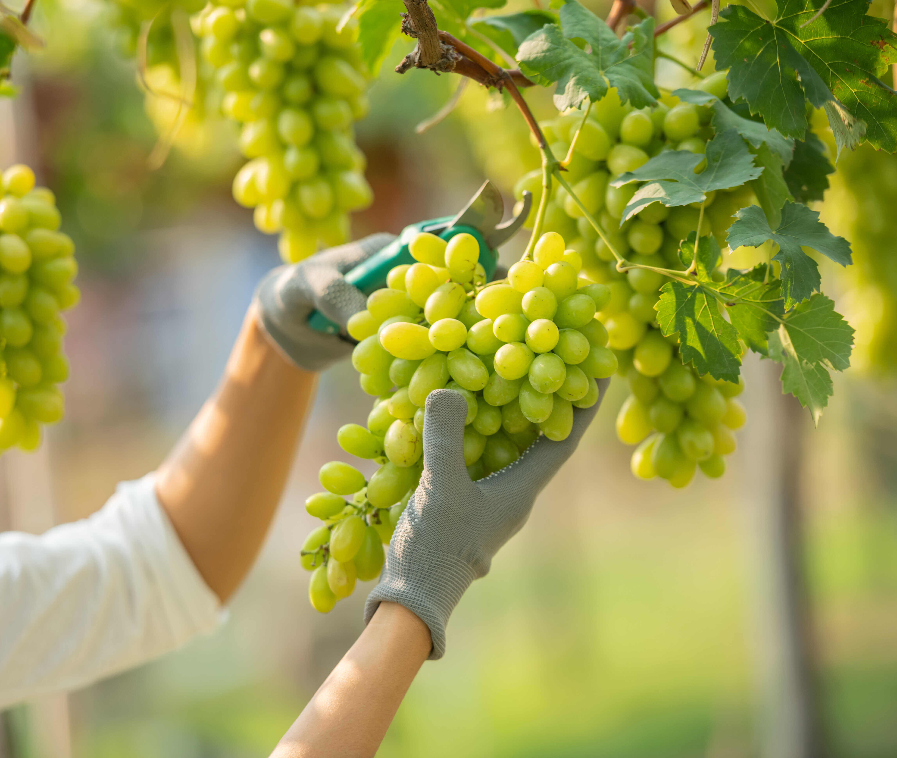
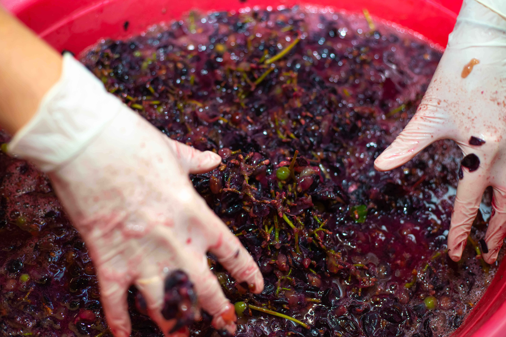
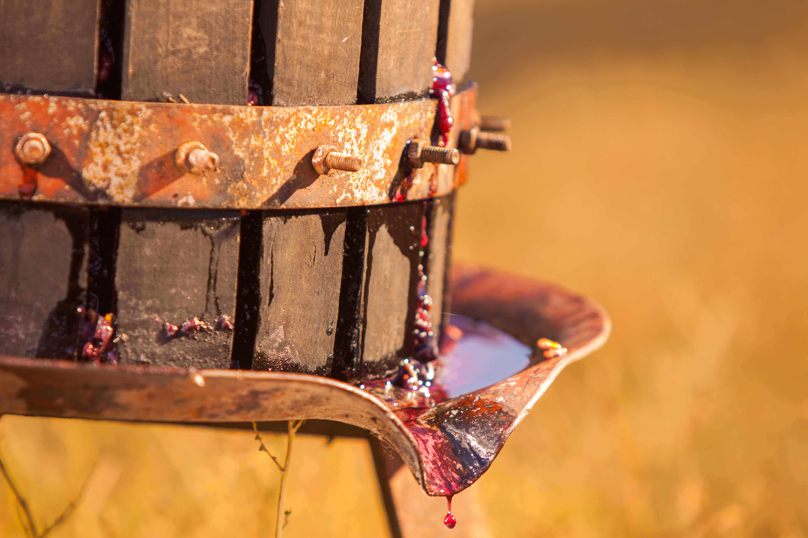
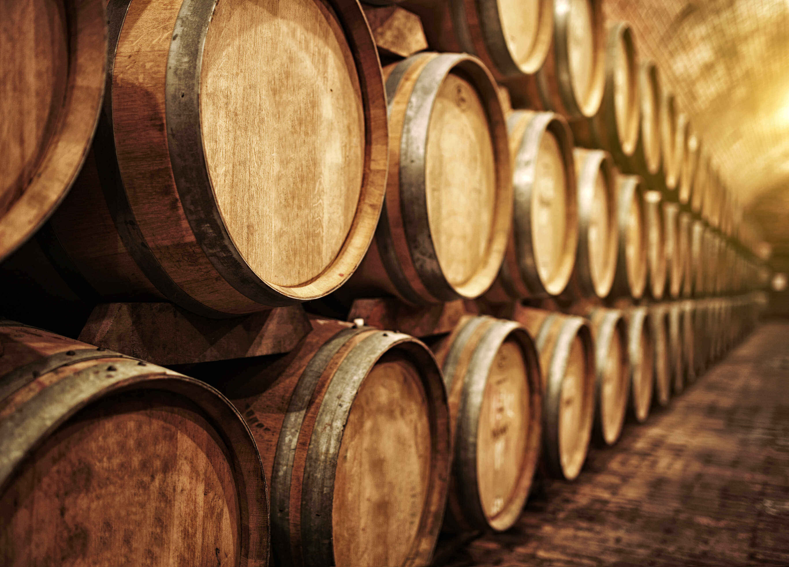
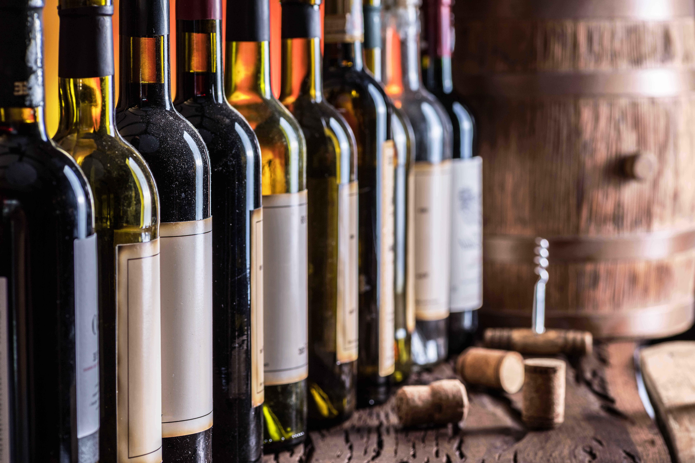
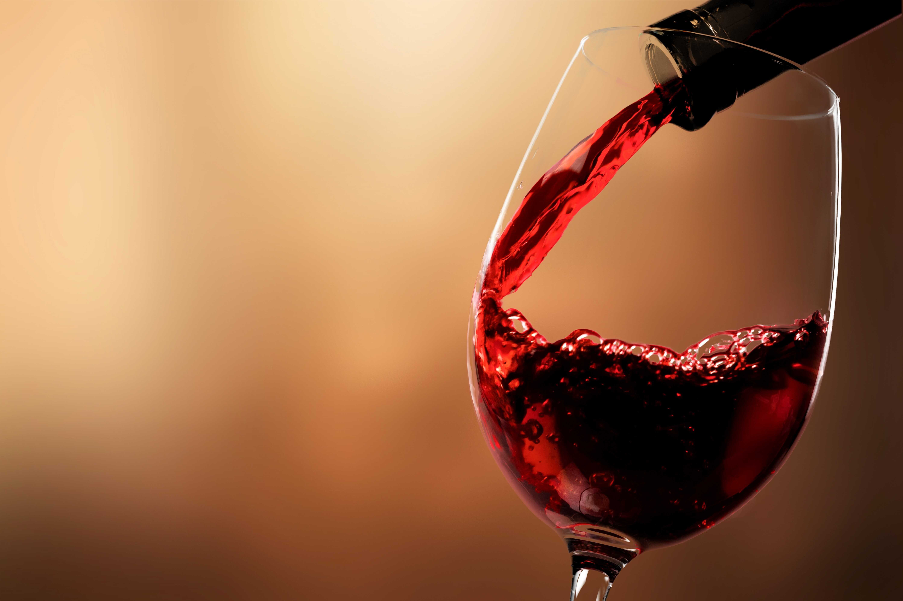

על היין
יין ביתי
סוגי ענבים
יין לאירוע
יין אדום
יין לבן
יין רוזה
סיורים
כרמים
יקבים
דרך היין
כל מה שתרצו לדעת על יין במקום אחד
איזה שלב בהפקת היין הכי מעניין אתכם?
1 / 6

2 / 6

3 / 6

4 / 6

5 / 6

6 / 6

❮
❯
 (1).png)